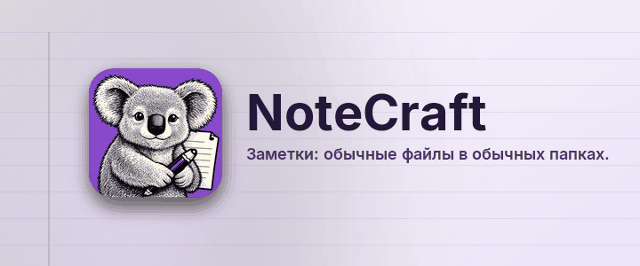

Заметки: обычные файлы в обычных папках.
NoteCraft хранит заметки так же, как вы храните файлы: записная книжка это папка, раздел это папка, страница это папка с одним файлом и его картинками внутри. Ничто не заперто в базе данных, поэтому любая папка, за которой уже следит ваш инструмент синхронизации, становится синхронизируемой записной книжкой, а резервная копия это просто копия.
Каждая страница этого раздела показывает одну часть NoteCraft прямо на себе:
Щёлкните в любом месте этого абзаца и печатайте. Страница сохраняется сама примерно через секунду после того, как вы остановились. Нажмите Enter в конце строки для нового абзаца и Escape, чтобы выйти из неё.
Назад на начальную страницу.
Эту страницу перевела модель искусственного интеллекта. Исправления приветствуются.